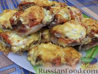

| Название блюда | Оценка рейтинга | Ссылка на рецепт | Фото блюда |
|---|---|---|---|
| Щи из квашеной капусты с картофелем и мясом |
10/10 | Рецепт | |
| Плов из говядины в казане на костре |
8/10 | Рецепт | |
| Бешбармак | 7/10 | Рецепт | |
| Домашние пельмени | 9/10 | Рецепт | |
| Мясо по-французски | 9/10 | Рецепт |  |